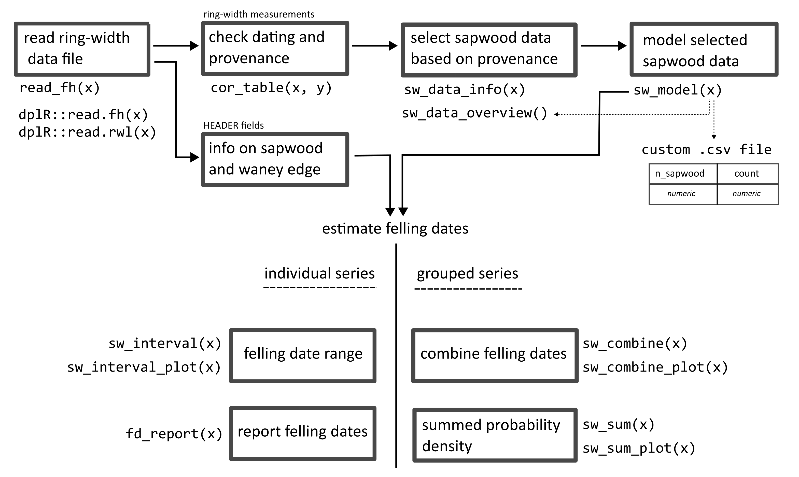

This package offers a set of functions that can assist you to infer felling date estimates from dated tree-ring series. The presence of (partially) preserved sapwood allows to estimate the missing number of sapwood rings ( ? in figure below), and to report an interval in which the actual felling date is situated.

This procedure can be implemented for individual series as well as for a group of timbers.
Where it can be assumed that a group of historical timbers were all felled at the same time (i.e. in the same year), but due to the absence of the bark/cambial zone (waney edge) and the last formed tree ring this cannot be assessed, the preserved sapwood rings can be used to infer a date range for the felling date.
Taking into account the observed number of sapwood rings on all samples and combining them into a single estimate, is likely to provide a more accurate and precise estimate of the felling date year for the group of timbers under study.
Furthermore, an additional function provides a tool to sum sapwood probability distributions, comparable to ‘summed probability densities’ commonly applied to sets of radiocarbon (14C) dates.
Installation
You can install the development version of fellingdateR from GitHub with:
#install.packages("pak")
pak::pak("hanecakr/fellingdateR")Basic example
In the following example the combined felling date range for a set of five dated tree-ring series is computed:
library(fellingdateR)
## a data set where all series have partially preserved sapwood:
trs_example1
#> series last n_sapwood waneyedge
#> 1 trs_01 1000 5 FALSE
#> 2 trs_02 1009 10 FALSE
#> 3 trs_03 1007 15 FALSE
#> 4 trs_04 1005 16 FALSE
#> 5 trs_05 1010 8 FALSE
sw_combine(trs_example1, plot = TRUE)
The light grey distributions represent the probability density function of the felling date range for each individual series. The dark grey distribution is the combined estimate for a common felling date.
The sapwood data used in the example above to estimate the felling date range, was published by Hollstein in 1980:
sw_model("Hollstein_1980")
#> $sapwood_data
#> [1] "Hollstein_1980"
#>
#> $n
#> [1] 490
#>
#> $range
#> min mean max
#> 6.00 25.05 67.00
#>
#> $density_function
#> [1] "lognormal"
#>
#> $fit_parameters
#> meanlog sdlog
#> 2.81357890 0.41620736
#> (0.01880233) (0.01329526)
#>
#> $sapwood_model
#> n_sapwood p model_fit count
#> 1 1 1.143856e-10 5.604897e-08 NA
#> 2 2 1.107667e-06 5.427569e-04 NA
#> 3 3 6.572161e-05 3.220359e-02 NA
#> 4 4 6.697648e-04 3.281848e-01 NA
#> 5 5 2.917879e-03 1.429761e+00 NA
#> 6 6 7.845478e-03 3.844284e+00 4
#> 7 7 1.558774e-02 7.637994e+00 9
#> 8 8 2.528777e-02 1.239101e+01 18
#> 9 9 3.557549e-02 1.743199e+01 21
#> 10 10 4.511128e-02 2.210453e+01 21
#> 11 11 5.291838e-02 2.593001e+01 21
#> 12 12 5.847980e-02 2.865510e+01 27
#> 13 13 6.168335e-02 3.022484e+01 27
#> 14 14 6.270361e-02 3.072477e+01 37
#> 15 15 6.187987e-02 3.032113e+01 25
#> 16 16 5.961755e-02 2.921260e+01 21
#> 17 17 5.632071e-02 2.759715e+01 24
#> 18 18 5.235228e-02 2.565261e+01 29
#> 19 19 4.801543e-02 2.352756e+01 23
#> 20 20 4.354902e-02 2.133902e+01 18
#> 21 21 3.913128e-02 1.917433e+01 19
#> 22 22 3.488778e-02 1.709501e+01 26
#> 23 23 3.090081e-02 1.514139e+01 17
#> 24 24 2.721872e-02 1.333717e+01 19
#> 25 25 2.386428e-02 1.169350e+01 14
#> 26 26 2.084176e-02 1.021246e+01 9
#> 27 27 1.814260e-02 8.889875e+00 11
#> 28 28 1.574987e-02 7.717438e+00 8
#> 29 29 1.364165e-02 6.684408e+00 6
#> 30 30 1.179345e-02 5.778789e+00 3
#> 31 31 1.017998e-02 4.988188e+00 3
#> 32 32 8.776330e-03 4.300402e+00 3
#> 33 33 7.558758e-03 3.703792e+00 5
#> 34 34 6.505127e-03 3.187512e+00 NA
#> 35 35 5.595166e-03 2.741631e+00 4
#> 36 36 4.810558e-03 2.357174e+00 5
#> 37 37 4.134922e-03 2.026112e+00 4
#> 38 38 3.553733e-03 1.741329e+00 1
#> 39 39 3.054196e-03 1.496556e+00 3
#> 40 40 2.625106e-03 1.286302e+00 NA
#> 41 41 2.256692e-03 1.105779e+00 1
#> 42 42 1.940470e-03 9.508301e-01 1
#> 43 43 1.669088e-03 8.178532e-01 NA
#> 44 44 1.436201e-03 7.037387e-01 NA
#> 45 45 1.236339e-03 6.058060e-01 NA
#> 46 46 1.064793e-03 5.217487e-01 2
#> 47 47 9.175209e-04 4.495852e-01 NA
#> 48 48 7.910512e-04 3.876151e-01 NA
#> 49 49 6.824083e-04 3.343801e-01 NA
#> 50 50 5.890423e-04 2.886307e-01 NA
#> 51 51 5.087694e-04 2.492970e-01 NA
#> 52 52 4.397201e-04 2.154628e-01 NA
#> 53 53 3.802943e-04 1.863442e-01 NA
#> 54 54 3.291226e-04 1.612701e-01 NA
#> 55 55 2.850331e-04 1.396662e-01 NA
#> 56 56 2.470227e-04 1.210411e-01 NA
#> 57 57 2.142330e-04 1.049741e-01 NA
#> 58 58 1.859287e-04 9.110504e-02 NA
#> 59 59 1.614803e-04 7.912533e-02 NA
#> 60 60 1.403484e-04 6.877070e-02 NA
#> 61 61 1.220707e-04 5.981464e-02 NA
#> 62 62 1.062509e-04 5.206292e-02 NA
#> 63 63 9.254883e-05 4.534893e-02 NA
#> 64 64 8.067277e-05 3.952966e-02 NA
#> 65 65 7.037208e-05 3.448232e-02 NA
#> 66 66 6.143144e-05 3.010140e-02 NA
#> 67 67 5.366574e-05 2.629621e-02 1
#> 68 68 4.691575e-05 2.298872e-02 NA
#> 69 69 4.104443e-05 2.011177e-02 NA
#> 70 70 3.593374e-05 1.760753e-02 NA
#> 71 71 3.148196e-05 1.542616e-02 NA
#> 72 72 2.760137e-05 1.352467e-02 NA
#> 73 73 2.421627e-05 1.186597e-02 NA
#> 74 74 2.126129e-05 1.041803e-02 NA
#> 75 75 1.867996e-05 9.153180e-03 NA
#> 76 76 1.642343e-05 8.047483e-03 NA
#> 77 77 1.444946e-05 7.080237e-03 NA
#> 78 78 1.272146e-05 6.233514e-03 NA
#> 79 79 1.120772e-05 5.491782e-03 NA
#> 80 80 9.880763e-06 4.841574e-03 NA
#> 81 81 8.716743e-06 4.271204e-03 NA
#> 82 82 7.694957e-06 3.770529e-03 NA
#> 83 83 6.797416e-06 3.330734e-03 NA
#> 84 84 6.008483e-06 2.944157e-03 NA
#> 85 85 5.314552e-06 2.604130e-03 NA
#> 86 86 4.703779e-06 2.304852e-03 NA
#> 87 87 4.165844e-06 2.041264e-03 NA
#> 88 88 3.691753e-06 1.808959e-03 NA
#> 89 89 3.273657e-06 1.604092e-03 NA
#> 90 90 2.904707e-06 1.423306e-03 NA
#> 91 91 2.578917e-06 1.263669e-03 NA
#> 92 92 2.291057e-06 1.122618e-03 NA
#> 93 93 2.036553e-06 9.979109e-04 NA
#> 94 94 1.811399e-06 8.875853e-04 NA
#> 95 95 1.612087e-06 7.899228e-04 NA
#> 96 96 1.435545e-06 7.034171e-04 NA
#> 97 97 1.279077e-06 6.267475e-04 NA
#> 98 98 1.140316e-06 5.587548e-04 NA
#> 99 99 1.017186e-06 4.984211e-04 NA
#> 100 100 9.078620e-07 4.448524e-04 NA
#>
#> $hdi_model
#> lower upper p
#> 1 6 34 0.9561202Getting started
You can find an overview of the main functions and sapwood datasets distributed with the package in the documentation.
Some practical examples are provided in the getting started vignette.
Genreal workflow
The fellingdateR-package allows to fully document the methodology to establish a felling date – for a single timber or a group of timbers – making the whole procedure reproducible and could assist to build standardized workflows when applied to large datasets of historical tree-ring series originating from geographically distinct regions. The package offers several functions that are related to each step in the (generalized) workflow when working with tree-ring series from (pre-)historical objects or constructions

Motivation & citation
This package was developed during the analysis of a large data set of tree-ring series that originate from medieval timber constructions in Bruges (Belgium). The results of this study were published in Dendrochronologia.
Please cite this paper when using the fellingdateR package:
Kristof HANECA
, Vincent DEBONNE, Patrick HOFFSUMMER 2020. The ups and downs of the building trade in a medieval city: tree-ring data as proxies for economic, social and demographic dynamics in Bruges (c. 1200 – 1500). Dendrochronologia 64, 125773.
https://doi.org/10.1016/j.dendro.2020.125773
To refer to the current version of the package:
Haneca K (2023). fellingdateR: an R package to facilitate the organisation, analysis and interpretation of tree-ring data from wooden heritage objects and structures. R package, version 0.0.0.9003, https://github.com/hanecakr/fellingDateR.
Comments and contributions
Please report any issues or bugs here: https://github.com/hanecakr/fellingdateR/issues.
Get citation information for
fellingdaterin R typingcitation(package = 'fellingdater').Please note that the
fellingdateRpackage is released with a Contributor Code of Conduct. By contributing to this project, you agree to abide by its terms.